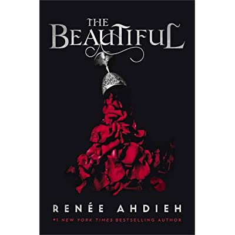
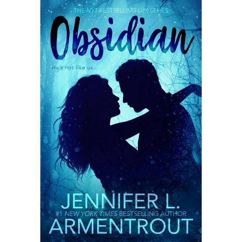
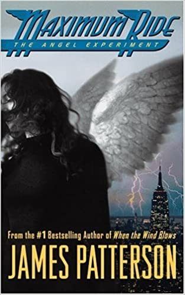
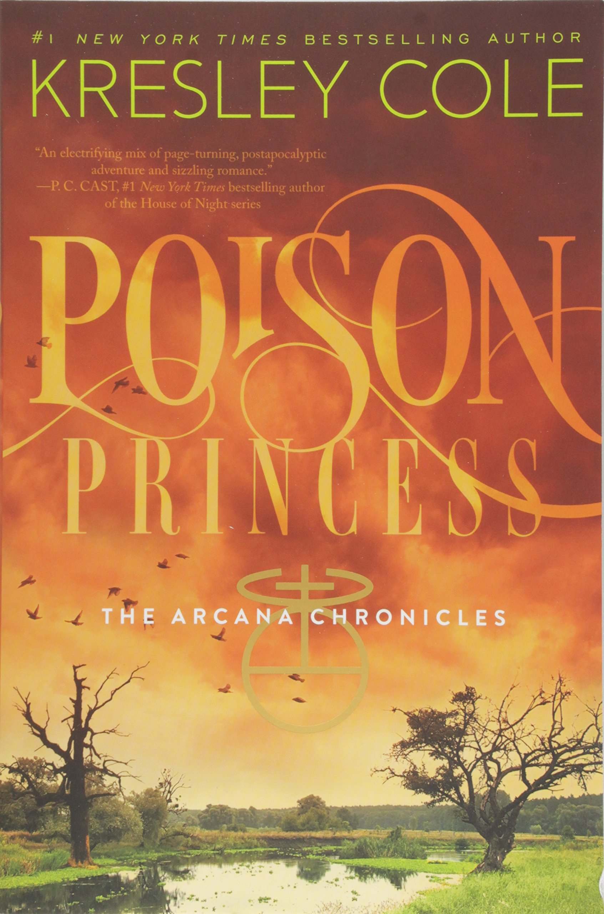
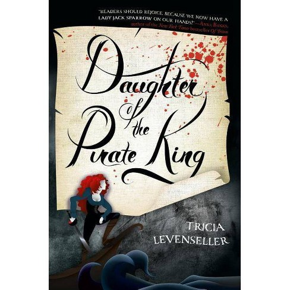
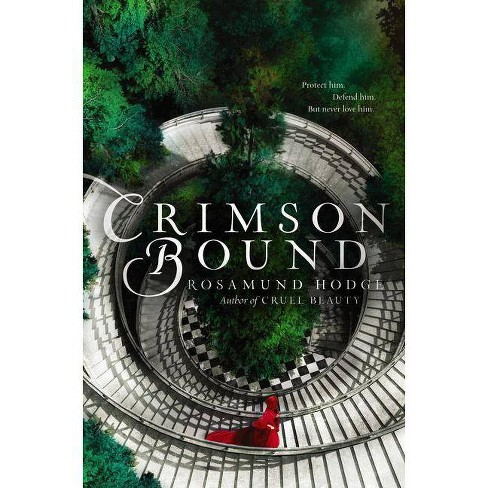
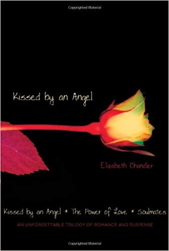

| Mallory's Top 8 Best Reads |
| Rank |
Book |
Genre |
Author |
About |
Released |
| 1 |
 |
YA Fiction |
Renee Ahdieh |
In 1872, New Orleans is a city ruled by the dead. But to seventeen-year-old Celine Rousseau, New Orleans provides her a refuge after she's forced to flee her life as a dressmaker in Paris. Taken in by the sisters of the Ursuline convent along with six other girls, Celine quickly becomes enamored with the vibrant city from the music to the food to the soirées and—especially—to the danger. |
10/8/19 |
| 2 |
 |
YA sci-fi |
Jennifer L. Armentrout |
When we moved to West Virginia right before my senior year, I’d pretty much resigned myself to thick accents, dodgy internet access, and a whole lot of boring… until I spotted my hot neighbor, with his looming height and eerie green eyes. Things were looking up.
And then he opened his mouth.
Daemon is infuriating. Arrogant. Stab-worthy. We do not get along. At all. But when a stranger attacks me and Daemon literally freezes time with a wave of his hand, well, something… unexpected happens.
The hot alien living next door marks me.
You heard me. Alien. Turns out Daemon and his sister have a galaxy of enemies wanting to steal their abilities, and Daemon’s touch has me lit up like the Vegas Strip. The only way I’m getting out of this alive is by sticking close to Daemon until my alien mojo fades.
If I don’t kill him first, that is. |
5/8/12 |
| 3 |
 |
YA Fiction |
James Patterson |
Fourteen-year-old Maximum Ride, better known as Max, knows what it's like to soar above the world. She and all the members of the "Flock"--Fang, Iggy, Nudge, Gasman and Angel--are just like ordinary kids--only they have wings and can fly. |
4/11/05 |
| 4 |
 |
YA |
Kresley Cole |
Sixteen year old Evangeline"Evie" Greene leads a charmed life--until she begins experiencing horrifying hallucinations. When an apocalyptic event decimates her Louisiana hometown, killing everyone she loves, Evie realizes her hallucinations were actually visions of the future--and they're still happening. |
10/1/12 |
| 5 |
 |
YA |
Sarah J. Maas |
A Court of Thorns and Roses is the first book in the new adult fantasy series of the same name by Sarah J. Maas. The novel is retelling of Beauty and the Beast with faerie lore. It follows the protagonist, Feyre who finds herself entwined with faeries after unknowingly killing one. |
5/5/15 |
| 6 |
 |
YA |
Trisha Levenseller |
A 17-year-old pirate captain intentionally allows herself to get captured by enemy pirates in this thrilling YA adventure. When the ruthless pirate king learns of a legendary treasure map hidden on an enemy ship, his daughter, Alosa, knows there's only one pirate for the job—herself. |
2/28/17 |
| 7 |
 |
YA |
Rosamund Hodge |
Crimson Bound is a story full of villains who are allowed to love and heroines who are allowed to murder and be selfish. Rosamund Hodge does not do simple characters - they are all tangled up in a bizarre web of friendship, fear, love, hate, desire and loyalty. |
9/20/16 |
| 8 |
 |
Paranormal |
Elizabeth Chandler |
Kissed by an Angel is a romantic-mystery series that begins with Ivy Lyons. Her life is turned upside down when her mother marries the wealthiest man in Stonehill and becomes part of his family, which includes the most popular and mysterious boy in her grade, Gregory Baines. |
12/16/08 |